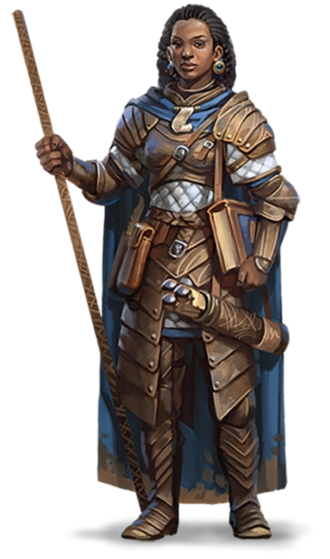
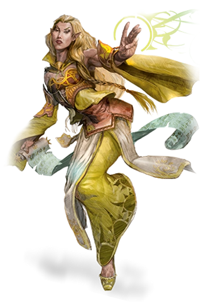
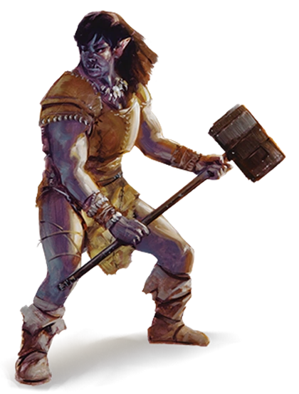
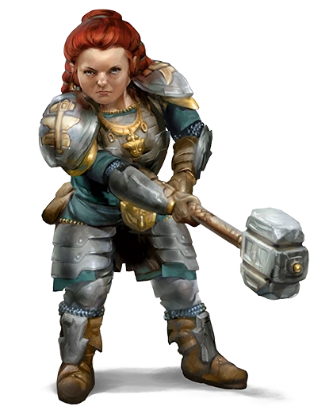

En las crónicas de la mayoría de los mundos, los humanos son la más joven de las razas, tardíos en su llegada a la escena mundial y efímeros en comparación con enanos, elfos y dragones. Quizás es por sus cortas vidas que luchan por lograr tanto como puedan en los años que le son dados; o quizás sienten que tienen algo que probar a las razas mayores, y es ese el por qué de las fundaciones de sus imperios basados en la conquista y el comercio. Cualquiera que sea su motivación, los humanos son los innovadores, los triunfadores y los pioneros de los mundos.
Los elfos son un pueblo mágico de gracilidad sobrenatural, que viven en lugares de etérea belleza, morando en el interior de antiguos bosques o en espiras plateadas que brillan con luz feérica, donde una suave música surca el aire y dulces fragancias flotan en el viento. Los elfos aman la naturaleza y la magia, el arte, la música y la poesía. los elfos tienen diferentes subrazas, entre las cuales podemos encontrar: Alto elfo, los más comunes; elfo de los bosques o elfos silvanos; elfo oscuro, de naturaleza maligna; elfo del mar, que hicieron del océano su hogar; entre otros
Ya sea unidos bajo el liderazgo de un poderoso brujo o habiendo luchado hasta el hartazgo después de años de conflicto, las tribus orcas y los humanos a veces forman alianzas, uniendo fuerzas en una enorme horda para el terror de las tierras civilizadas de los alrededores. Cuando estas alianzas son selladas mediante matrimonios, nacen los semiorcos. Algunos se alzan para convertirse en orgullosos líderes de sus tribus, aventajándose de su sangre humana frente a sus compañeros de sangre pura. Otros se aventuran al mundo exterior para probarse a sí mismos frente a los humanos y las otras razas civilizadas. Muchos de ellos se convierten en aventureros, cubriéndose de gloria gracias a su fuerza, y de notoriedad por sus costumbres barbáricas y furia salvaje.
Ricos reinos de antiguas grandezas, salones tallados en las entrañas de las montañas, el eco de picos y martillos en profundas minas y ardientes forjas, la entrega total al clan y la tradición, y un odio visceral hacia los goblins y los orcos. Estos principios comunes unen a todos los enanos. Los enanos se dividen en diferentes razas que son: Enano de las colinas, fuertes y corpulentos, poseen sentidos agudos y gran resistencia; enano de la montaña, fuerte y corpulento, acostumbrado a la vida dura en terrenos rocosos, un poco mas altos que sus pares, tambien de piel un poco mas clara; Duegar, habitantes de la infraoscuridad, crueles y sigilosos esclavistas que invaden el mundo de la superficie en busca de cautivos, para después venderlos a las otras razas de la Infraoscuridad.
Ver el personaje"En cautividad durante 10.000 años. Desterrado de mi propia tierra. ¿Y ahora osáis entrar en MI Reino? No estáis preparados..."